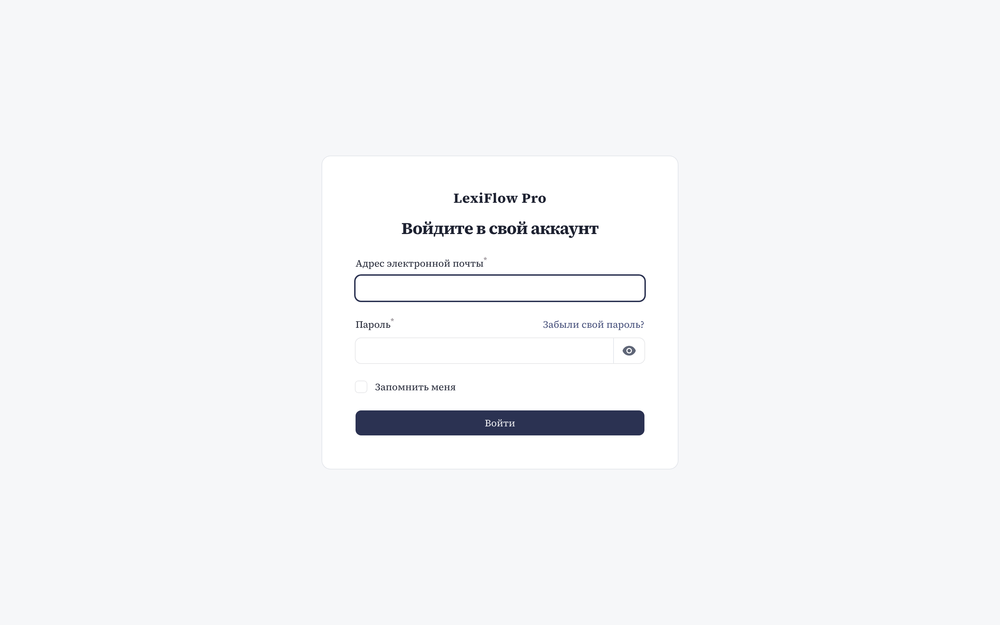
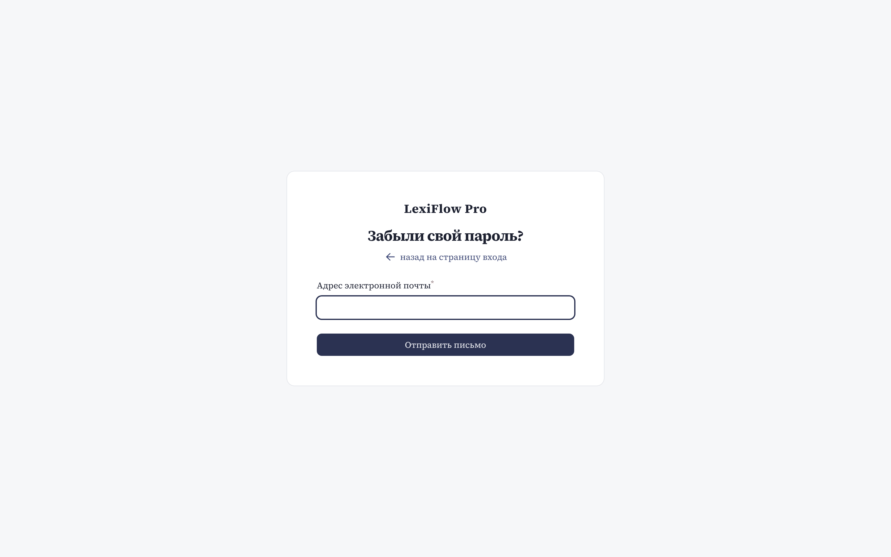
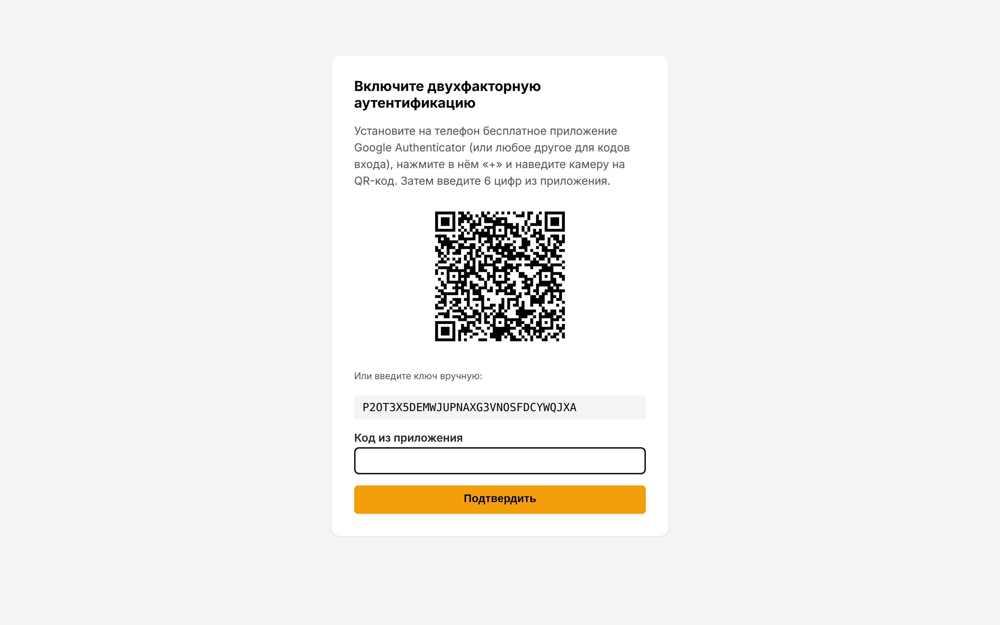
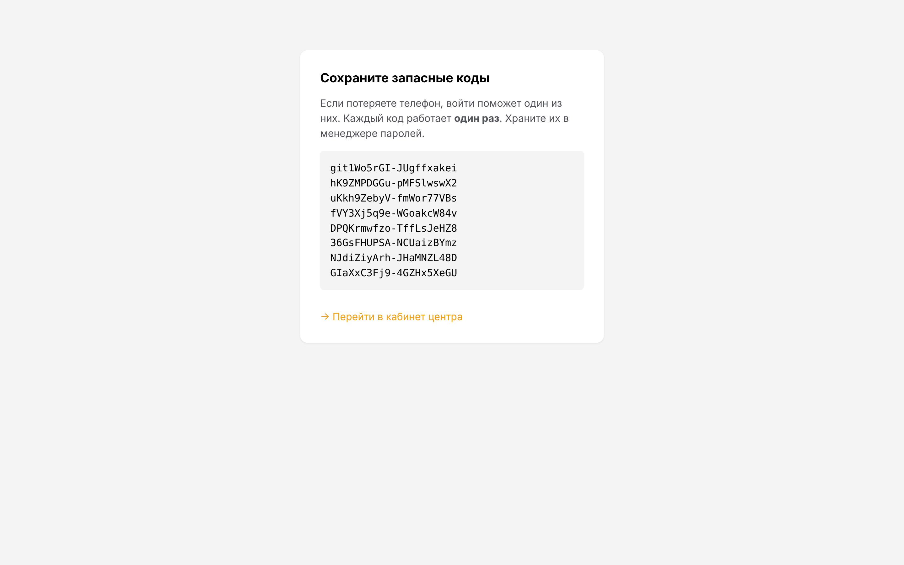
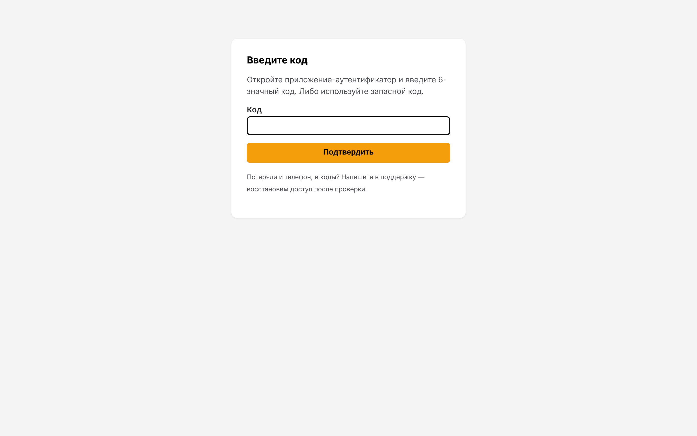
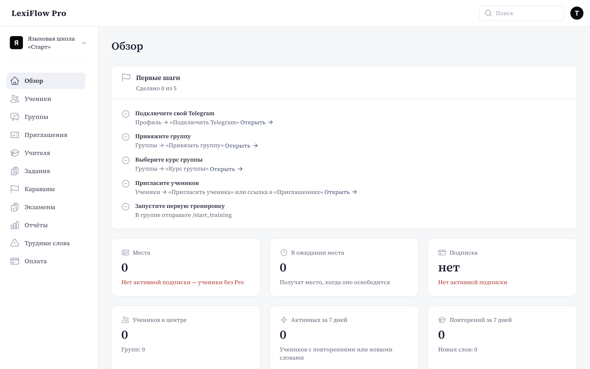
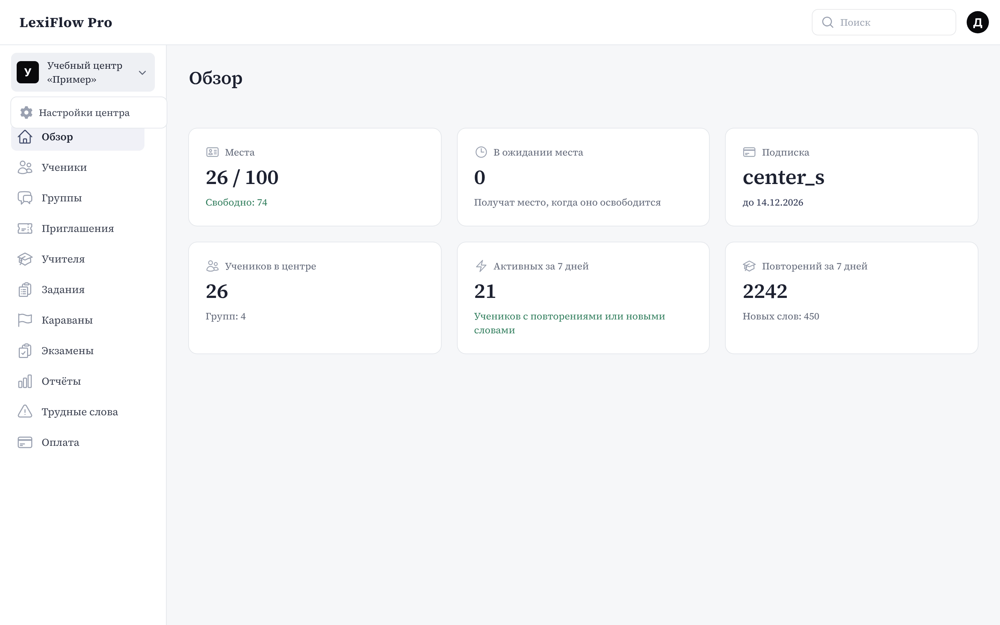
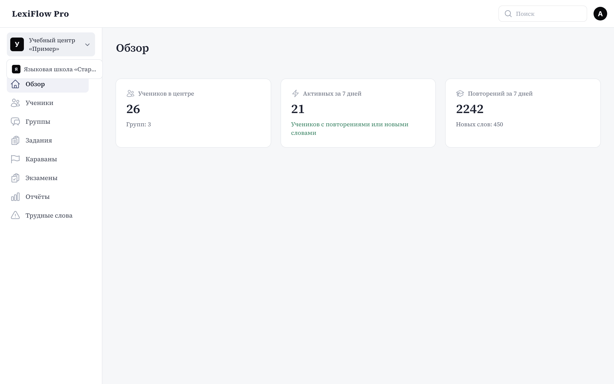
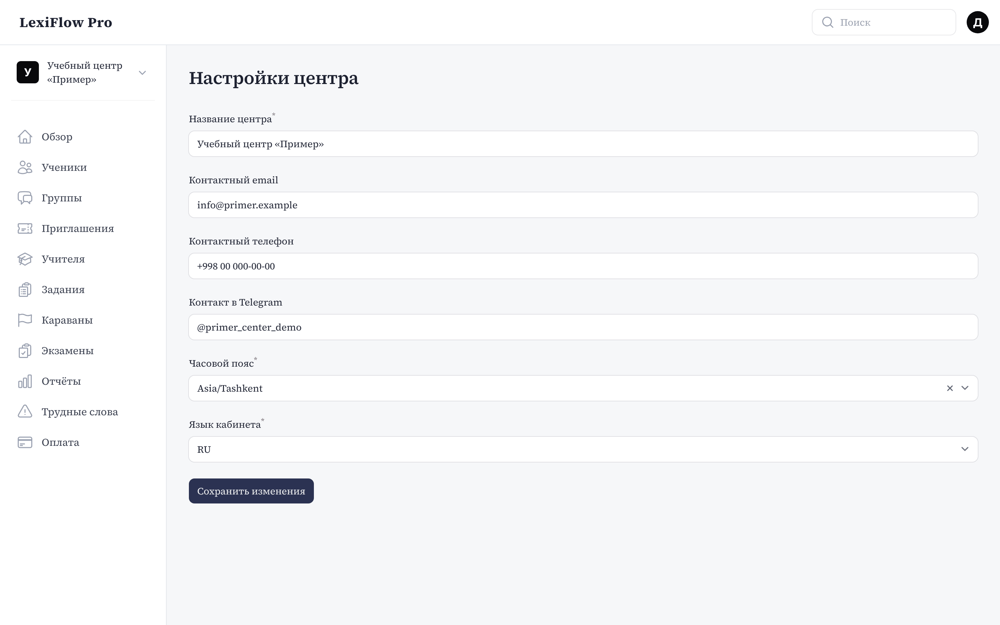

Самостоятельной регистрации центра нет. Центр создаёт администратор платформы в панели /admin и там же приглашает первого владельца по email. Остальных сотрудников владелец приглашает сам из кабинета (глава «Учителя»).
/org, введите email и пароль, нажмите «Войти».
«Забыли свой пароль?» открывает форму восстановления. Ответ на ней всегда одинаковый, есть такой email или нет: письмо со ссылкой придёт, только если email принадлежит сотруднику центра.

Владельцу она обязательна. При первом входе кабинет сам откроет страницу настройки. Учителю она не требуется; если учитель её включил, код нужен так же, как владельцу.



У нового центра на «Обзоре» сверху есть список «Первые шаги» со счётчиком «Сделано N из 5». У каждого невыполненного шага — подсказка и ссылка «Открыть». Список исчезает, когда сделаны все пять шагов. Его видят владелец и учитель; ссылку на привязку группы видит только владелец.
| Шаг | Где сделать | Глава |
|---|---|---|
| Подключите свой Telegram | Профиль → «Подключить Telegram» | ниже в этой главе |
| Привяжите группу | Группы → «Привязать группу» | «Группы» |
| Выберите курс группы | Группы → «Курс группы» | «Группы» |
| Пригласите учеников | Ученики → «Пригласить ученика» или ссылка в «Приглашениях» | «Ученики», «Приглашения» |
| Запустите первую тренировку | в Telegram-группе отправьте /start_training | руководство учителя по командам бота |

Первый день центра по этому списку выглядит так: подключить Telegram → привязать группу → выбрать ей курс → оплатить тариф (глава «Оплата») → пригласить учеников → запустить тренировку в группе → выдать первое задание (глава «Задания»).
Профиль открывается из меню в правом верхнем углу (кружок с вашей буквой) → «Профиль». В нём имя, email, пароль и блок Telegram.
Без подключённого Telegram команды учителя в группах (/start_training, /start_exam) вас не узнают, а владелец не сможет привязывать группы. Подключить Telegram может только сам сотрудник — владелец за другого этого не делает.
| Что написано в профиле | Что делать |
|---|---|
| Telegram не подключён | пройдите шаги выше |
| Telegram ID … был указан вручную и не подтверждён | нажмите «Подтвердить Telegram» и пройдите ту же ссылку |
| Telegram отключён: этот аккаунт Telegram подтвердил другой пользователь | номер, записанный за вами вручную, оказался чужим — подключите свой |
| Telegram подключён: @… | всё в порядке |
Кнопка «Отключить» в профиле (или команда /unlink в чате с ботом) убирает связь: бот перестанет узнавать вас как учителя, пока не подключите снова.
Сотрудник с подключённым Telegram может отправить боту в личном чате /org: бот ответит списком ваших центров, ролью, местами (владельцу), числом учеников, активных за 7 дней, и ссылкой на кабинет.
Название центра сверху слева — это меню центра. Владельцу в нём доступен пункт «Настройки центра». Если вы работаете в нескольких центрах, здесь же список центров для переключения.


| Поле «Настроек центра» | Что задаёт |
|---|---|
| Название центра | как центр называется в кабинете, в боте и в счетах; обязательно |
| Контактный email, телефон, контакт в Telegram | реквизиты плательщика в счёте на оплату |
| Часовой пояс | по нему показываются сроки заданий и даты, считаются дни в отчётах; обязательно |
| Язык кабинета | RU или UZ — на этом языке кабинет говорит со всеми сотрудниками центра; обязательно |
